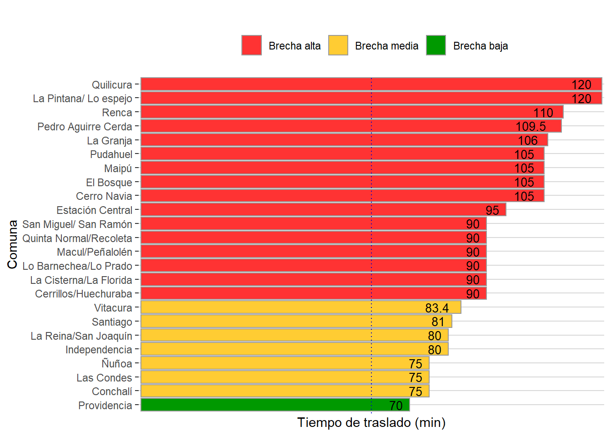
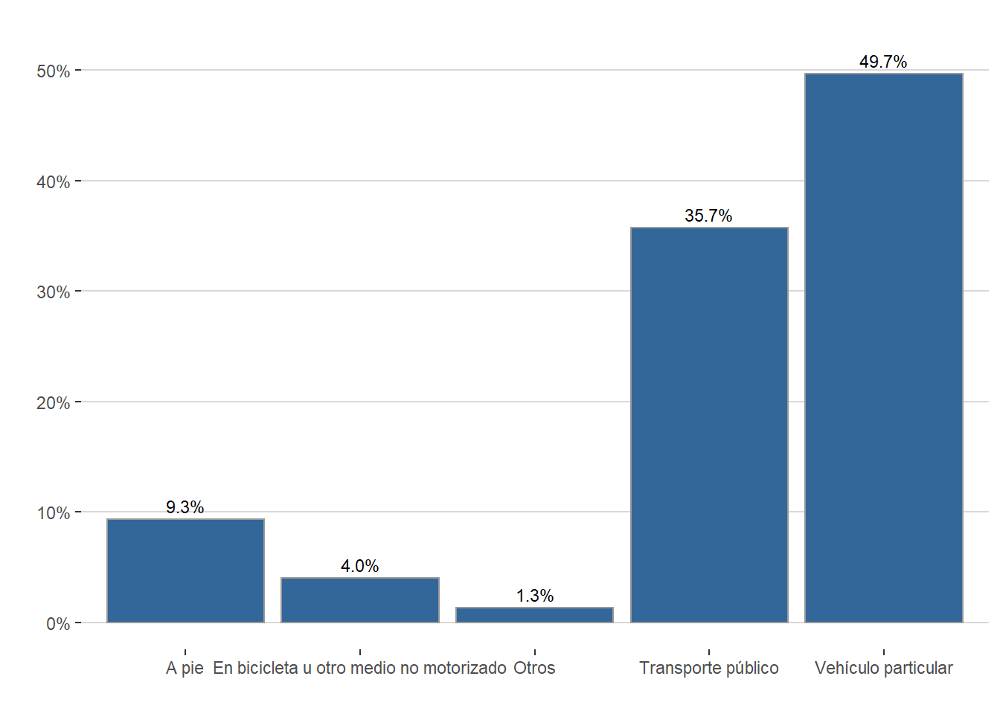

Diagnóstico Social Comunal
Nicolás Vatter, Paulina Peña & Felipe Vega
Noviembre 2019
Capítulo 1: Geografía, Desarrollo Urbano y Movilidad
Las Condes hoy se presenta como un extenso asentamiento urbano en la Región Metropolitana, con una población cercana a los 300 mil habitantes, es la novena comuna con mayor cantidad de población a nivel nacional y la más poblada del sector oriente del Gran Santiago.
La comuna destaca por sus elevados estándares de calidad de vida urbana. Consolidar estos estándares y extenderlo a todos los sectores de la comuna supone un desafío significativo para la gestión municipal, especialmente en un contexto de transición avanzada hacia el envejecimiento de su población,
En esta línea, comprender las características geográficas de la ciudad es fundamental para una correcta planificación social. En la literatura académica se demuestra la importancia que adquieren las variables asociadas a los sistemas de transporte e infraestructura urbana en la calidad de vida de las personas.
En la presente sección se aborda una breve caracterización geográfica y de transporte. Se incluye la subdivisión territorial, una descripción de variables de transporte, movilidad e infraestructura urbana presente en la comuna de Las Condes.
i. Subdivisión urbana: Unidades Vecinales
La Ley 19.418 sobre Juntas de Vecinos y demás organizaciones comunitarias (Ministerio del Interior, 1997) establece los criterios para subdividir los territorios de las comunas. La ley señalada, define una Unidad Vecinal como el territorio “(…) en que se subdividen las comunas, para efectos de descentralizar asuntos comunales y promover la participación ciudadana y la gestión comunitaria, y en el cual se constituyen y desarrollan sus funciones las juntas de vecinos”.
Las unidades vecinales son determinadas por el alcalde “…de propia iniciativa o a petición de las juntas de vecinos o de los vecinos interesados, con el acuerdo del Concejo y oyendo al Consejo Económico y Social de la Comuna”. Actualmente, existen 25 unidades vecinales distribuidas en el territorio comunal (ver mapa).
ii. Organizaciones comunitarias
La ley 19.418, también reconoce la organización de la comunidad bajo la forma de organizaciones territoriales y organizaciones funcionales. Entre las primeras destacan las juntas de vecinos, mientras que en las segundas aparecen los centros de madres, centros de padres y apoderados, organizaciones artísticas y culturales, organizaciones deportivas, y otras.
De acuerdo con la definición normativa las organizaciones territoriales se caracterizan por constituirse con individuos que residen dentro de una misma unidad vecinal, y tienen por objetivo promover el desarrollo de la comunidad, defendiendo los intereses de los vecinos.Por su parte, las organizaciones funcionales corresponden a agrupaciones con personalidad jurídica y sin fines de lucro, que representan y promueven valores e intereses específicos de una comunidad.
A través del Departamento de Organizaciones Comunitarias, la Dirección de Desarrollo Comunitario de Las Condes fomenta y promueven el funcionamiento adecuado de estas organizaciones que canalizan los intereses y necesidades de los vecinos. En la Tabla 1 se describe la cantidad de organizaciones presentes en la comuna.
| Organización | Cantidad |
|---|---|
| Junta de vecinos | 59 |
| Unión comunal | 5 |
| Centro de seguridad | 136 |
| Centro cultural | 53 |
| Club de adulto mayor | 90 |
| Clubes deportivos | 60 |
| Centros de madres | 3 |
| Centros de padres | 20 |
| Centro juvenil | 10 |
| Comité de vivienda | 7 |
| Comité de administración | 13 |
| Otras organizaciones funcionales | 3 |
Fuente: Elaboración propia en base a datos del Departamento de Organizaciones Comunitarias DECOM
iii. Desarrollo urbano
La Nueva Agenda Urbana (2016), es un acuerdo internacional ratificado por el Estado de Chile en la Conferencia sobre Vivienda y Desarrollo Sostenible de Naciones Unidas, que invita a poner los recursos y esfuerzos en alcanzar la equidad urbana, con el propósito de lograr que las ciudades y los asentamientos humanos sean inclusivos, seguros, resilientes y sostenibles, y dar igualdad de derechos y acceso a las oportunidades que ofrecen las ciudades a las personas.
En relación a lo anterior, el Instituto Nacional de Estadísticas (INE) a través del Sistema de Indicadores y Estándares del Desarrollo Urbano (SIEDU), ha dispuesto una serie de mediciones que reportan el compromiso de las ciudades para alcanzar el desarrollo urbano. En esta línea el presente apartado aborda estadísticas de áreas verdes, transporte y movilidad a nivel comunal.
a. Parques e infraestructura urbana
La presencia de áreas verdes en las ciudades genera una serie de externalidades positivas que se traducen en integración, cohesión, participación social de las comunidades, y beneficios sociales intangibles relacionados a un concepto amplio de bienestar y calidad de vida (Anguluri & Narayanan, 2017; Ayala-Azcárraga, Diaz & Zambrano, 2019).
Las Condes, actualmente, cuenta con una superficie de 701.515 metros cuadrados de parques urbanos y 679.627 metros cuadrados de plazas que en total suman 138 hectáreas de áreas verdes urbanas, según los datos del Sistema de Indicadores y Estándares del Desarrollo Urbano (Instituto Nacional de Estadísticas & PNUD, 2018).
Al analizar la cantidad de áreas verdes urbanas per cápita, los datos revelan que en la comuna existen 4,7 metros cuadrados de áreas verdes por habitante, distante de la meta propuesta por el Consejo Nacional de Desarrollo Urbano (CNDU) que es de 10 metros cuadrados por persona.
Entre las comunas con mayor cantidad de áreas verdes per cápita a nivel nacional, Las Condes se ubica en el lugar 58, y a nivel regional ocupa el puesto 23 del ranking. En la Figura 1 se muestra la distribución de metros cuadrados de áreas verdes por habitantes para las comunas de la Provincia de Santiago a través de un mapa, aquellas comunas con mayor cantidad de áreas verdes per cápita aparecen más oscuras.
Figura 1. Áreas verdes (mt2/habitante) comunas de la Provincia de Santiago.
Fuente: Elaboración propia en base a datos del Sistema de Indicadores y Estándares del Desarrollo Urbano(SIEDU)
Las comunas de referencia, Vitacura y Providencia se encuentran dentro de las tres con mayor cantidad de áreas verdes por persona con un promedio de 17,2 metros cuadrados por habitante. Vitacura se ubica en el primer lugar a nivel nacional con un índice de 18,9 m2/hab., mientras que Providencia aparece en el tercer lugar con 15,5 m2 de área verde por persona.
En la misma línea, SIEDU rescata información respecto a la distancia mínima promedio1 que existe entre los hogares y las áreas verdes comunales. El objetivo de este indicador es visualizar la accesibilidad que poseen los vecinos a las áreas verdes de su comuna. De acuerdo con las metas planteadas por el CNDU, una distancia inferior a 400 metros es una cifra aceptable que permite elevar los estándares de calidad de vida urbana.
En términos de distancia a plazas públicas y parques urbanos, Las Condes se ubica dentro del lugar 29 del ranking regional, con una distancia media de 335 metros, un nivel aceptable según los parámetros fijados por CNDU, y se encuentra en una mejor situación respecto al promedio de las comunas de referencia (397 metros de distancia promedio).
No obstante, si se observa la interacción de ambos indicadores, distancia y superficie, Las Condes aparece fuera del cuadrante de cumplimiento en acceso a servicios y equipamientos urbanos del CNDU. En este sentido, surge un desafío importante para el municipio. En la Figura 2 se muestra el cumplimiento de los indicadores de SIEDU por cuadrante para todas las comunas del gran Santiago.
Figura 2. Cumplimiento comunal de indicadores de acceso a servicios y equipamientos públicos Provincia de Santiago.

Fuente: Elaboración propia en base a datos de SIEDU
b. Transporte y movilidad
La información señalada en el Plan de Desarrollo Comunal 2018 – 2021 (PLADECO), acusa un aumento significativo del tránsito vehicular en Las Condes durante los últimos años, con un crecimiento anual que varía entre un 6% y 17% según el área observada. Por su parte, se indica que el parque automotriz bordea un total de ciento diez mil vehículos.
Los puntos de mayor congestión son el eje Américo Vespucio y Manquehue, estos constituyen los mayores desafíos para la gestión de tránsito. La solución del eje Américo Vespucio excede la capacidad del municipio por lo que, las obras que se harán cargo de esta problemática han sido abordadas por el nivel central a través del sistema de concesiones.
Del mismo modo se observan grados de congestión en otros sectores de la comuna, los cuales están fuera del rango aceptado, a partir de ahí se están desarrollando proyectos de consolidación de la vialidad comunal. En la Tabla 2 se indica la afluencia de vehículos por hora en los puntos de mayor demanda, por horario punta (mañana y tarde). Con estos flujos, las velocidades promedio en la comuna son aceptables en horas punta, alcanzando una velocidad media entre 25 y 50 km/h.
| Lugar | Horario punta mañana | Horario punta tarde |
|---|---|---|
| Av. Andrés Bello dirección poniente | 5850 | 4550 |
| Av. Andrés Bello dirección oriente | 4650 | |
| Av. Kennedy dirección oriente | 4950 | |
| Av Manquehue norte | 2800 | |
| Av. Manquehue sur | 2420 | |
| Av. Vespucio norte | 3000 | 3064 |
| Av. Vespucio sur | 2500 | 2600 |
| Av Colón dirección poniente | 3900 | 2100 |
Fuente: Elaboración propia en base a datos del Sistema de Indicadores y Estándares del Desarrollo Urbano
Al mismo tiempo, las estimaciones de SIEDU indican que el 90% de los viajes en transporte público en la comuna tiene una duración máxima de 75 minutos en horario punta mañana, y de 60 minutos considerando todos los medio de transporte utilizados.
Para el CNDU la duración deseable de los viajes no debiese exceder los 60 min., considerando el costo de oportunidad que implica para las familias. Las Condes se encuentra cercana a alcanzar niveles aceptables, para el caso de las comunas de referencia la media es de 76 minutos, y Providencia es la comuna que más cercana a cumplir el estándar con una duración máxima 70 minutos para el 90% de los viajes efectuados. En la Figura 3 se clasifica la brecha existente entre el indicador y la meta.Figura 3. Clasificación brecha tiempos de traslado en transporte público a nivel comunal en la Provincia de Santiago respecto de la meta CNDU (60 min).

Fuente: Elaboración propia en base a datos de SIEDU
Según los datos recolectados del PLADECO 2018 – 2021, se calcula que en promedio existen alrededor de un millón doscientos mil viajes diarios en la comuna, siendo la mitad de estos dentro de la misma. El principal destino fuera de la comuna es Vitacura con un 13% seguido por Providencia y Lo Barnechea con un porcentaje que bordea el 7%.
Por otra parte, la Encuesta Casen recoge información relativa al tipo de transporte utilizado por la población ocupada para dirigirse a su lugar de trabajo. Al respecto, los datos señalan que el medio de transporte más utilizado por los vecinos de Las Condes para llegar a su lugar de trabajo es el vehículo motorizado particular (auto, camioneta, motocicleta u otro), seguido del uso de transporte público. En la Figura 4 se describen los medios de transporte más utilizados para movilizarse entre el hogar y el lugar de trabajo.
Figura 4. Medio de transporte frecuentemente utilizado para traslado entre el hogar y lugar de trabajo.

Fuente: Elaboración propia en base a datos de Casen 2015
En materia de transporte, existe una serie de desafíos para empujar el desarrollo sostenible y sustentable. En este sentido, el municipio de Las Condes ha incorporado un número importante de servicios de electromovilidad disponibles para los vecinos (scooters y bicicletas), además ha puesto a disposición una flota de buses eléctricos que conectan zonas de residencia que no se encuentran totalmente cubiertas por el sistema de transporte público metropolitano. Esto, con el objetivo de mejorar la capacidad de movilidad urbana en la comuna.
Capítulo 2: Estadísticas demográficas
En el presente capítulo se explora la estructura demográfica de Las Condes, con un foco en el envejecimiento de la población y el fenómeno migratorio. El objetivo de esta sección es caracterizar a los vecinos y hogares de la comuna en un análisis comparado con las áreas de referencia.
En primer lugar, se presenta la estructura demográfica de la comuna según su composición por sexo y edad. Luego, se describen los indicadores de envejecimiento y se caracteriza la población de personas mayores. Enseguida, se exponen indicadores de densidad poblacional y se describe la composición de los hogares. Finalmente, se aborda el fenómeno migratorio, considerando migración internacional y migración interna, además de abarcar al segmento de población perteneciente a pueblos originarios.
i. Estructura demográfica
El Censo 2017 reveló que en Chile existen 17.574.003 habitantes distribuidos a lo largo del territorio nacional con una proyección de 19,1 millones al años 2019. La mayor concentración de población se registra en la Región Metropolitana (40,5%), territorio que alberga la capital nacional (Santiago).
En Las Condes, a través del mismo instrumento se contabilizaron un total de 294.838 personas, de las cuales 287.023 corresponden a residentes permanentes2. Si se considera la población total, la comuna representa el 1,7% de los habitantes del país y el 4,1% de la Región Metropolitana. La comuna es la novena más poblada en Chile.
Al mismo tiempo, las estadísticas censales sugieren que Las Condes registra la segunda tasa más elevada de envejecimiento relativo3 en la Región Metropolitana, y los datos de extranjería indican que es la tercera comuna con mayor población migrante en Chile.
a. Composición de la población según sexo
En Las Condes la composición de la población por sexo indica que existe una mayor proporción de mujeres, tendencia observada para el resto del país. El 53,9% de los vecinos de Las Condes corresponde a población femenina, a nivel nacional y regional esta alcanza el 51,1% y 51,3% respectivamente, mientras que en las comunas de referencia la proporción de mujeres es de 54,4%.
Figura 5. Proporción población por sexo según área de referencia.

Fuente: Elaboración propia en base a datos del Censo 2017
Capítulo 3: Caracterización Socioeconómica
Capítulo 5: Clases medias
Bibliografía
Alkire, S., Apablaza, M., Chakravarty, S., & Yalonetzky, G. (2017). Measuring chronic multidimensional poverty. Journal of Policy Modeling, 39(6), 983–1006.
Alkire, S., & Foster, J. (2011). Counting and multidimensional poverty measurement. Journal of Public Economics, 95(7–8), 476–487.
Anguluri, R., & Narayanan, P. (2017). Role of green space in urban planning: Outlook towards smart cities. Urban Forestry & Urban Greening, 25, 58–65.
Arriagada, V., Méndez, R., Sehnbruch, K., Apablaza, M., & González, P. (2018). Measuring the Quality of Employment (QoE) in Central America. A multidimensional approach (No. 38). Santiago.
Atkinson, A. B. (2003). Multidimensional deprivation: contrasting social welfare and counting approaches. The Journal of Economic Inequality, 1(1), 51–65.
Ayala-Azcárraga, C., Diaz, D., & Zambrano, L. (2019). Characteristics of urban parks and their relation to user well-being. Landscape and Urban Planning, 189, 27-35.
Balaz, V., & Williams, A. M. (2011). Risk attitudes and migration experience. Journal of Risk Research, 14(5), 583–596.
Bardasi, E., Jenkins, S., & Rigg, J. (2002). Retirement and the income of older people: a British perspective. Ageing and Society, 22(2), 131–159.
Benyamini, Y. (2016). Self-rated health. In Y. Benyamini, M. Johnston, & E. C. Karademas (Eds.), Assessment in health psychology (2nd ed., pp. 175–188). Boston: Hogrefe.
Bloom, D. E., Canning, D., & Lubet, A. (2015). Global population aging: Facts, challenges, solutions & perspectives. Daedalus, 144(2), 80–92.
Burchell, B., Sehnbruch, K., Piasna, A., & Agloni, N. (2013). The quality of employment and decent work: definitions, methodologies, and ongoing debates. Cambridge Journal of Economics, 38(2), 459–477.
Cabieses, B., Bernales, M., Obach, A., & Pedrero, V. (2016). Vulnerabilidad social y su efecto en salud en Chile. Desde la comprensión del fenómeno hacia la implementación de soluciones (1st ed.). Santiago de Chile: Universidad del Desarrollo.
Castles, S., De Haas, H., & Miller, M. J. (2013). The age of migration: International population movements in the modern world. Palgrave Macmillan.
CEPAL. (2009). El envejecimiento y las personas de edad. Indicadores sociodemográficos para América Latina y el Caribe (CELADE, Ed.). Retrieved from https://www.cepal.org/es/publicaciones/1350-envejecimiento-personas-edad-indicadores-sociodemograficos-america-latina-caribe
CIPEM. (2018a). Contexto Demográfico Global y Chileno: Situación de la Población Adulto Mayor. Retrieved from http://www.cipem.cl/wp-content/uploads/2018/12/Informe-1.pdf
CIPEM. (2018b). Mercado Laboral y Personas Mayores. Retrieved from http://www.cipem.cl/wp-content/uploads/2018/12/Reporte-II-20_12FV.pdf
Dahlgren, G., & Whitehead, M. (1991). Policies and strategies to promote social equity in health (1st ed.). Stockholm: Institute for future studies.
Davies, A. R., & Ware, J. E. (1981). Measuring health perceptions in the health insurance experiment (1st ed.). Los Angeles: Rand Corporation.
Donoso, E. (2008). Embarazo adolescente: un problema país. Revista Chilena de Obstetricia y Ginecología, 73, 291–292.
Estudios Urbanos UC. (2019). Índice de Calidad de Vida Urbana Comunas y Ciudades de Chile. Retrieved from https://www.cchc.cl/uploads/comunicacion/archivos/20180508_ICVU_2018-_Versión_Definitiva.pdf
Fernandez, B., & Herrera, S. (2017). Chile y sus mayores: 10 años de la Encuesta Calidad de Vida en la Vejez UC - Caja Los Andes. Retrieved from http://adultomayor.uc.cl/docs/Libro_CHILE_Y_SUS_MAYORES_2016.pdf
Franco, R., Hopenhayn, M., & León, A. (2010). Las clases medias en América Latina (1st ed.). México D.F: CEPAL.
Goss, D., Goss, F., & Adam-Smith, D. (2000). Disability and employment: a comparative critique of UK legislation. The International Journal of Human Resource Management, 11(4), 807–821.
Grundy, E., & Sloggett, A. (2003). Health inequalities in the older population: the role of personal capital, social resources and socio-economic circumstances. Social Science & Medicine, 56(5), 935–947.
Halek, M., & Eisenhauer, J. G. (2001). Demography of risk aversion. Journal of Risk and Insurance, 1–24.
Idler, E., & Cartwright, K. (2018). What do we rate when we rate our health? Decomposing age-related contributions to self-rated health. Journal of Health and Social Behavior, 59(1), 74–93.
Instituto Nacional de Estadísticas. (2016). Jefatura de hogar: Usos del concepto, historia, críticas y expresión en los indicadores. Retrieved from http://historico.ine.cl/genero/files/estadisticas/pdf/documentos/jefatura_hogar.pdf
Instituto Nacional de Estadísticas, & PNUD. (2018). Sistema de Indicadores y Estándares del Desarrollo Urbano (SIEDU). Retrieved July 25, 2019, from http://siedu.ine.cl/compromisos/compromisos.html
International Labour Organization. (2019). World Employment Social Outlook. Retrieved from https://www.ilo.org/wcmsp5/groups/public/---dgreports/---dcomm/---publ/documents/publication/wcms_670542.pdf
Kotok, S., Ikoma, S., & Bodovski, K. (2016). School climate and dropping out of school in the era of accountability. American Journal of Education, 122(4), 569–599.
Krugman, P. (1994). Competitiveness: A Dangerous Obsession. Foreign Affairs, 73(2), 28–44.
Libertad y Desarrollo. (2019). Hacia una definición de clase media en Chile. Retrieved from https://lyd.org/wp-content/uploads/2019/05/tp-1399-clase-media.pdf
Marmot, M., & Allen, J. J. (2014). Social Determinants of Health Equity. American Journal of Public Health, 104(S4), S517–S519.
Marmot, M., Friel, S., Bell, R., Houweling, T. A. J., & Taylor, S. (2008). Closing the gap in a generation: health equity through action on the social determinants of health. The Lancet, 372(9650), 1661–1669.
Martin, J. (2015). Activation and active labour market policies in OECD countries: stylised facts and evidence on their effectiveness. Journal of Labor Policy, 4(1), 4.
Ministerio de Desarrollo Social. (2015). Definición de ingresos Casen. Retrieved June 25, 2019, from http://observatorio.ministeriodesarrollosocial.gob.cl/casen/casen_def_ingresos.php
Naciones Unidas. (2009). Clasificación Industrial Internacional Uniforme de todas las acividades económicas (CIIU). Retrieved from file:///C:/respaldo/Downloads/SLV_2017_EHPM_v01_M_DIGESTYC-TEC-CIIU_Rev4.pdf
Newman, P., & Jennings, I. (2008). Cities as Sustainable Ecosystems (1st ed.). Washington, DC: ISLAND PRESS.
Nussbaum, M. C. (2000). Women and Human Development: The Capabilities Approach (1st ed.). Cambridge: Cambridge University Press.
OECD. (2017). Pensions at a Glance 2017: OECD and G20 Indicators. Paris: OECD Publishing.
Okun, M. A., Stock, W. A., Haring, M. J., & Witter, R. A. (1984). Health and Subjective Well- Being: A Meta-Analyis. The International Journal of Aging and Human Development, 19(2), 111–132.
Östlin, P. (2008). Gender inequity in health: why it exists and how we can change it. Global Public Health, 3, 1–12.
Ravenstein, E. G. (1885). The laws of migration. Journal of the Statistical Society of London, 48(2), 167–235.
Rodríguez, J., & Busso, G. (2009). Migración interna y desarrollo en América Latina entre 1980 y 2005 (1st ed.). Santiago: Naciones Unidas.
Ross, C. E., & Wu, C.-L. (1996). Education, Age, and the Cumulative Advantage in Health. Journal of Health and Social Behavior, 37(1), 104–120.
Sapelli, C. (2011). A cohort analysis of the income distribution in Chile. Estudios de Economía, 38(1), 223–242.
Sen, A. (2000). Poverty as Capability Deprivation. In Development as freedom (1st ed., pp. 78– 96). New York: Anchor Books.
Sen, A. (2001). Development as freedom (1st ed.). Oxford: Oxford Paperbacks.
Sen, A. (2002). Why health equity? Health Economics, 11(8), 659–666.
Servicio Nacional de la Discapacidad. (2016). II Estudio Nacional de la Discapacidad. Santiago.
UNESCO (2015). Education 2030: Towards inclusive and equitable quality education and lifelong learning for all. Retrieved from https://unesdoc.unesco.org/ark:/48223/pf0000245656
United Nations, Department of Economics and Social Affairs, P. D. (2017). International Migration report 2017: Highlights. New York.
United Nations. (2016). Nueva Agenda Urbana. Retrieved from http://habitat3.org/wp-content/uploads/NUA-Spanish.pdf
United Nations. (2018). Disability and Development Report. Retrieved from https://www.un.org/disabilities/documents/2019/UN-flagship-report-disability-7June.pdf
Uribe, G. G.-B. (2014). Pobreza infantil e impacto de la crisis en la infancia. Educación y Futuro: Revista de Investigación Aplicada y Experiencias Educativas, (30), 109–126.
Weiss, R. S., Bass, S. A., Heimovitz, H. K., & Oka, M. (2005). Japan’s silver human resource centers and participant well-being. Journal of Cross-Cultural Gerontology, 20(1), 47–66.
World Health Organization. (2007). Global Age-Friendly Cities. Retrieved from https://www.who.int/ageing/publications/Global_age_friendly_cities_Guide_English.pdf
World Health Organization. (2018). Ageing and health. Retrieved October 22, 2019, from https://www.who.int/news-room/fact-sheets/detail/ageing-and-health
- Este indicador se construye a partir de distancia mínima promedio ponderada por población entre el centro geométrico de cada manzana y la plaza pública más cercana. Dicha distancia se pondera en función de la población a nivel de manzana con la finalidad de no subestimar el resultado final. El estándar establecido por el CNDU para este indicador es de 400m. ↩
- Residentes se refiere a las personas censadas que declaran residencia habitual en Las Condes. Se considera a los individuos encuestados dentro o fuera de la comuna. ↩
- La tasa de envejecimiento relativo expresa la proporción de personas de 60 años y más sobre el total de población. ↩